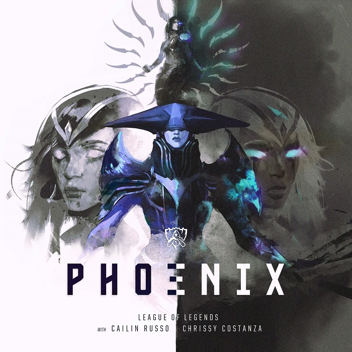

2019 리그 오브 레전드 월드 챔피언십 주제곡
결단의 순간이 왔어
상처를 가려 보지만 그 아래에는
이제 그만하라는 머릿속의 무수한 속삭임들
설상가상에 산 넘어 산
하지만 가장 큰 적은
바로 너 자신
무기를 들고 폭풍을 마주해
자 이제
결단을 내려야 할 시간
발목을 잡는 건
널 의심하는 너 자신뿐
여기서 쓰러질지 더 높이 올라갈지는 너의 선택
네 안의 괴물을 잠재워야
비로소 날아오를 수 있는 법
날아올라라 불사조여
이제 새로운 시대를 열 시간
네 속의 악마를 떨쳐내
천장을 뚫고
날아올라라 불사조여
불장난은 이제 그만
잿더미에서 나올 시간
수많은 목소리가
이제 그만 하라고 외쳐
귀 기울일 필요 없어
널 믿는 사람들에게만 집중해
그 믿음과 함께라면 넌 신 같은 존재니까
결단을 내려야 할 시간
발목을 잡는 건
널 의심하는 너 자신뿐
여기서 쓰러질지 더 높이 올라갈지는 너의 선택
네 안의 괴물을 잠재워야
비로소 날아오를 수 있는 법
날아올라라 불사조여
이제 새로운 시대를 열 시간
네 속의 악마를 떨쳐내
천장을 뚫고
날아올라라 불사조여
여기서 쓰러질지 더 높이 올라갈지는 너의 선택
네 안의 괴물을 잠재워야
비로소 날아오를 수 있는 법
날아올라라 불사조여
이제 새로운 시대를 열 시간
네 속의 악마를 떨쳐내
천장을 뚫고
날아올라라 불사조여
[Verse 1: Cailin Russo]
What are you willing to lose?
You cover your wounds, but underneath them
A million voices in your head that whisper, "Stop, now"
Another twist of the knife, turn of the screws
It's all in your mind and it's fighting you
Arm yourself, a storm is coming
Well, kid, what you gonna do now?
It's your reflection looking back to pull you down
[Chorus: Cailin Russo & Chrissy Constanza]
So are you gonna die today or make it out alive?
You gotta conquer the monster in your head and then you'll fly
Fly, phoenix, fly
It's time for a new empire
Go bury your demons then tear down the ceiling
Phoenix, fly
[Verse 2: Chrissy Costanza]
And now you're playing with matches
Come out of the ashes underneath you
A million voices in the crowd they're screaming, "Stop, now"
We'll let 'em swallow their pride, you're turning the tide to true believers
Got them in the palm of your hand, you're playing God now
What you gonna do now?
It's your reflection looking back to pull you down
